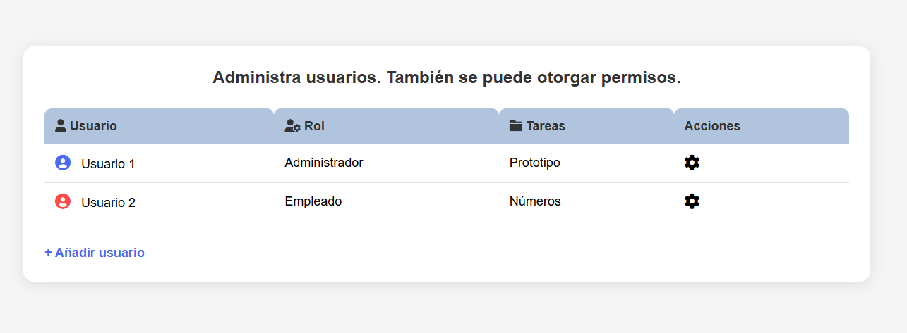

Un diagrama de Gantt es una herramienta gráfica utilizada en la gestión de proyectos para planificar y visualizar el progreso de tareas a lo largo del tiempo.
Los administradores del sistema tienen acceso a un conjunto completo de herramientas avanzadas que les permiten gestionar, personalizar y optimizar el entorno según las necesidades de la organización.
